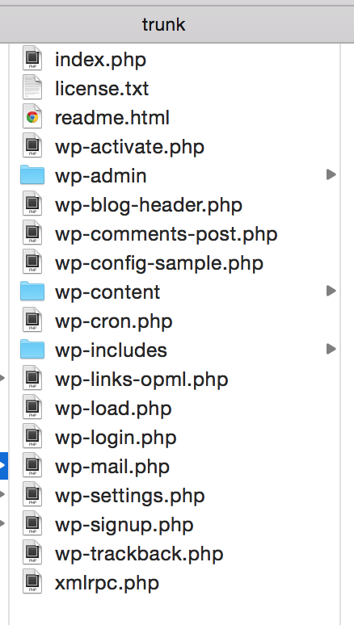
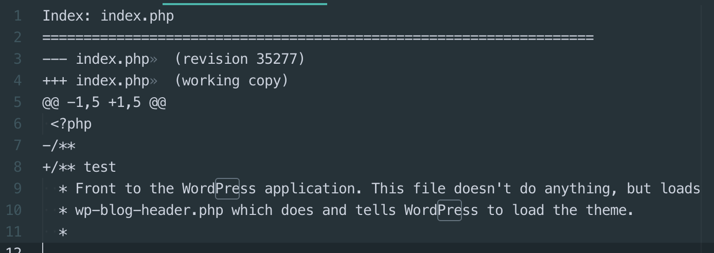
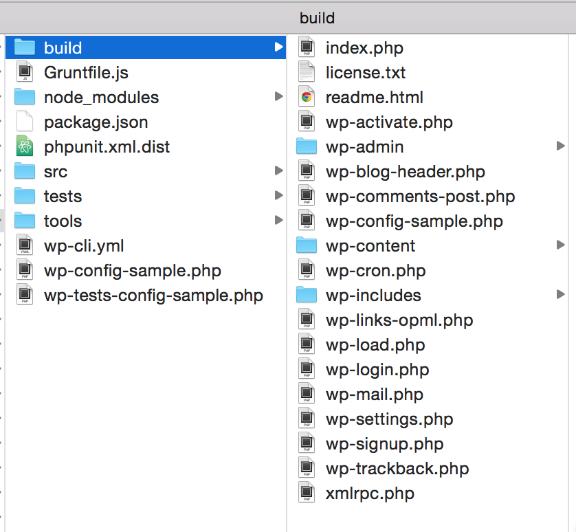
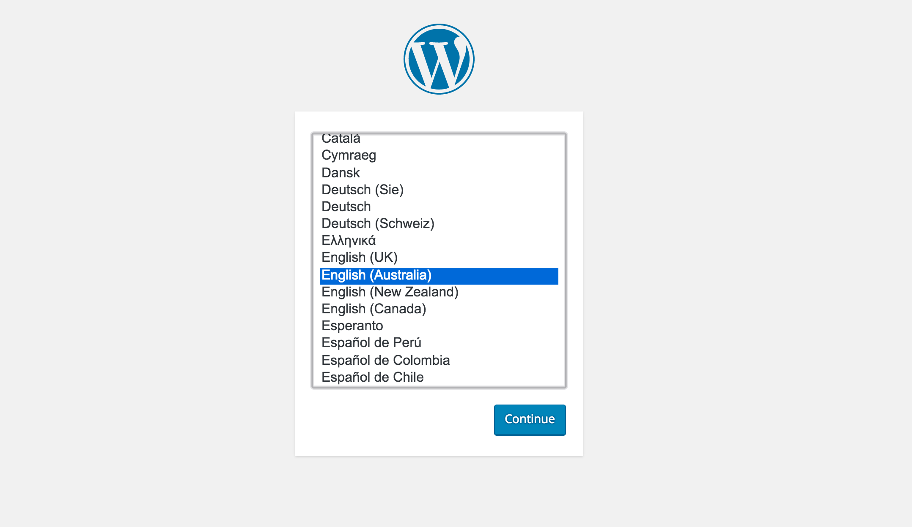
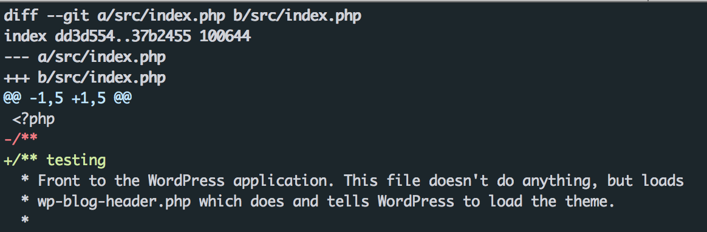
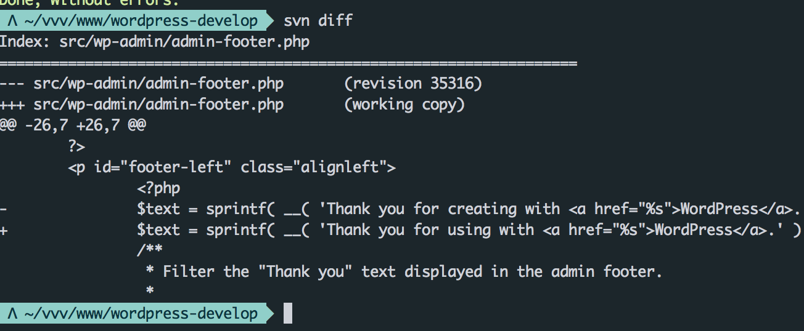

This talk is for WordPress developers that:
- Know how to install WordPress locally
- Know the basics of SVN or Git on the command line
- Want to learn how to contribute to WordPress Core
3 options for setting up a dev site:
- Simple Setup (SVN)
- Advanced Setup (Git and Grunt)
- VVV Setup (SVN and Grunt)
Simple: Step #1
SVN Checkout WordPress trunk
svn co https://core.svn.wordpress.org/trunk/ your-dir-here
Simple: Step #2
Install WordPress
Simple: Step #3
Edit some files, then create a patch
svn diff > my-patch-name.patch
Simple: Step #4
Review your patch
Advanced: Step #2
Git clone the latest files from WordPres.org
$ git clone git://develop.git.wordpress.org/ your-dir
Advanced: Step #3
Install node modules
$ npm install
Advanced: Step #4
Build WordPress core
$ grunt
Advanced: Step #5
Advanced: Step #6
Install WordPress
Advanced: Step #7
Edit some files in the /src/ dir, run grunt then git diff
VVV: Step #2
After installing you get:
http://local.wordpress-trunk.dev
VVV: Step #3
Edit some files in the /src/ dir, run grunt then svn diff
